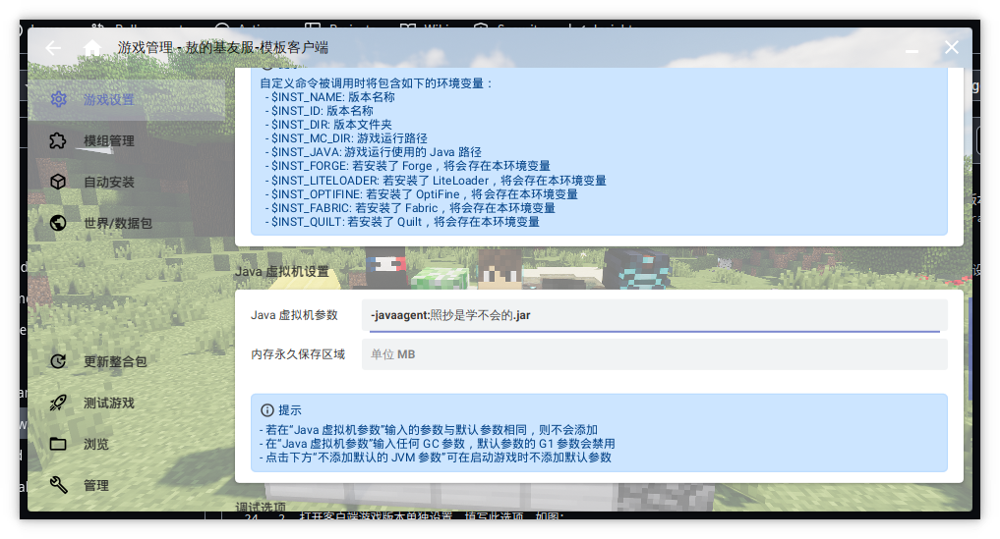
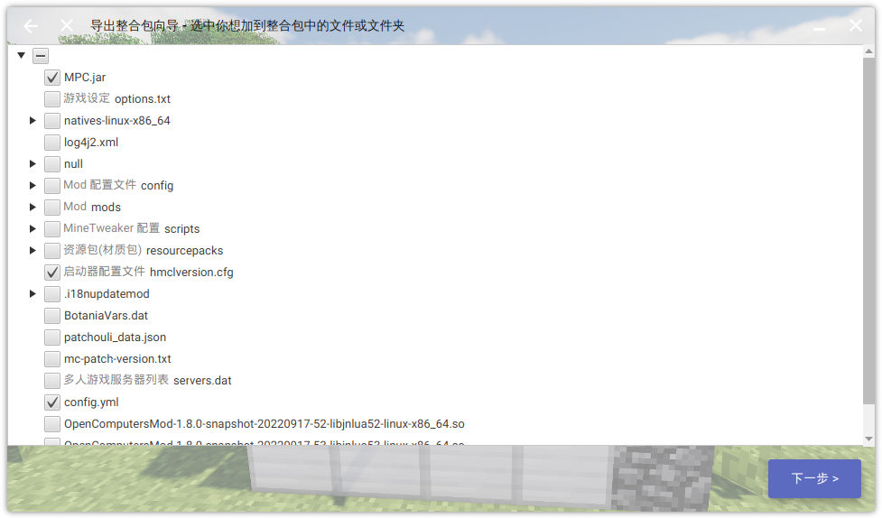

McPatch帮助文档
McPatch是一个给Minecraft客户端做文件更新的独立应用程序，支持Windows（电脑端）和Android平台（手机端）
官方企鹅群【更新助手官方群】 925057600
提问前先来常见问题解答找找答案，这里收录了大部分报错信息和对应的解决方法
点击这里前往安装教程，当然也可以点页面右侧的箭头来跳转到下一页
开源仓库
- 文档站：https://github.com/BalloonUpdate/McPatchDocs
- 管理端：https://github.com/BalloonUpdate/McPatchManage
- 客户端：https://github.com/BalloonUpdate/McPatchClient
- 服务端：https://github.com/BalloonUpdate/MiniHttpServer
基本教程
一些使用小提示：
- 熟悉一些计算机相关的知识会让你在使用过程中遇到的坑更少
- 遇到问题先来常见问题解答找答案，这里收录了大部分常见的报错信息
- 有过开服经验或者Java开发经验会让你上手的更快
下面是一些常用的知识导航：
- Nginx，Apache，网站主机，SFTP，对象存储部署：参考自由化部署章节
- 不小心修改了history目录怎么办：参考不小心修改了history目录章节
- 如何加密配置文件和版本号文件：参考加密配置文件和版本号文件
准备工作
在开始安装McPatch之前，你需要先下载好这3个Jar文件：
McPatchManage.jar（管理端）：用来打更新包MiniHttpServer.jar（服务端）：小白友好的HTTP服务器，用来让客户端下载更新McPatchClient.jar（客户端）：用来更新客户端文件
管理端和服务端是装在你的服务器上用来做管理的，客户端是装在整合包里的用来发给玩家的
下载好上面的文件之后，在桌面新建一个目录叫mp用来存放McPatch服务端的文件。然后把McPatchManage.jar和MiniHttpServer.jar复制进去（这俩文件一定要放到一起）
创建好目录以后就可以前往下一个页面了，将正式开始McPatch的使用教程
小提示：目录不一定非要叫mp，你可以随意修改，可以包含中文，也可以到处移动它
编写启动脚本
在使用McPatch之前，我们先要为它编写两个启动脚本，过程很简单
- 打开刚创建的
mp目录 - 新建
manage.bat，粘贴java -jar xxx.jar & pause进去，然后保存关闭- 把
xxx换成McPatchManage实际文件名
- 把
- 新建
httpserver.bat，粘贴java -jar xxx.jar & pause进去，然后保存关闭- 把
xxx换成MiniHttpServer实际文件名
- 把
- 在
mp目录下创建一个新的目录叫workspace
每个文件的用途是这样的：
manage.bat脚本用来启动管理端，打新的更新包，用完后可以关掉管理端httpserver.bat脚本用来启动服务端，给客户端下载用，需要一直开着不能关闭workspace目录用来存放你要更新的文件
使用管理端
双击刚创建的manage.bat脚本即可启动管理端。管理端使用交互式命令行来完成各种操作，即使是在黑框命令行下也非常简单易用
创建第一个更新包
创建第一个更新包之前，要先把要更新的文件复制到workspace里来，这是一些栗子：（workspace目录里各种子文件夹仍然需要手动创建）
-
要更新所有模组，复制
.minecraft/mods目录- 到
mp/workspace/.minecraft/mods
- 到
-
要更新资源包，复制
.minecraft/resourcepacks目录- 到
mp/workspace/.minecraft/resourcepacks
- 到
-
要更新.minecraft目录旁边的
新玩家进服教程.txt，复制新玩家进服教程.txt文件- 到
mp/workspace/新玩家进服教程.txt
- 到
-
如果你开了版本隔离，就需要复制
.minecraft/versions/your-version/mods目录- 到
mp/workspace/.minecraft/versions/your-version/mods
- 到
到这里你可能已经看出规律了：workspace（工作空间目录）相当于本地的.minecraft目录的父目录，唯一的区别是：工作空间目录里面只要复制要更新的文件，不更新的文件暂时不用复制，因为会占用不必要的存储空间
如果你打算配置一键启动，那么游戏核心文件和资源文件就不能加入更新，会导致更新失败！
然后运行manage.bat，输入1或c，然后按下回车键，来开始创建第一个更新包。第一个版本号通常输入1.0，当然你也可以输入任何你喜欢的版本号风格，好了之后按Enter确定
版本号只能包括大小写字母数字，以及
!@#$()_+-=;',.切勿使用中文或者空格或其它字符
输入版本号之后，程序会列出你对文件的所有更改。因为我们是第一次打更新包，文件很多，我们粗略看一下就好，后续打包中建议仔细审阅这个列表以确保对文件的修改都是没问题的
如果你要给这个版本写更新记录的话，可以在此时打开changelogs.txt文件，把你的更新记录粘贴进去并保存（更新记录只能使用纯文本，不支持富文本格式，且编码必须是UTF8）。如果你不想写更新记录，请直接跳过这一步
接着输入y开始正式打包，首次打包内容一般都较大，可能会花费相当多的时间，请耐心等待
等到出现创建版本完成的字样后，就说明打包成功了（更新包文件会保存在public目录下）
容易出错的地方
已发布的版本千万不能手动删除文件：如果打包完成之后，才发现这个版本的好像有点问题时，应该加更一个新的版本来修复上个版本里的问题，而不能手动删掉更新包文件，这会导致后续更新的文件数据全部出现错乱！
若你实在需要撤回这个版本，请参考版本发错了怎么办
后续发布新版
后续发布新版本很简单，只需要对workspace目录下的文件做修改（就像对本地文件一样修改就好），然后打出更新包就完成了
比如我想要删除客户端的一个模组a.jar再添加一个新的模组b.jar，那么只需要在工作空间目录下删掉a.jar然后复制进去b.jar，接着打包新版本就好
若新旧文件同名，但文件内容被修改了也只一样的做法：直接覆盖旧文件就好，程序也能自动检测到
对目录的新建和删除也是一样，该怎么新建怎么新建，该什么删除怎么删除，就就像对本地文件一样进行这些操作
如果你在工作空间目录改了一些文件，但又觉得不妥，想要还原工作空间到没修改之前，可以启动管理端，输入4或restore来还原
目录用途说明
- worksapce工作空间目录：服主日常维护客户端文件内容的地方
- history历史目录：用来作为对比，以计算你对workspace目录做了哪些修改的目录
- 此目录由程序自动维护，切勿手动修改，会导致数据错乱，若不小心修改了，参考这里来还原
- public公共目录：用来存放历史更新包，
- 版本列表文件(versions.txt)—— 这个文件仅1.1版本的管理端才有
- 更新包文件(.zip)—— 这个文件仅1.1版本的管理端才有
- ++++++++++++++++++++++++++++++++++++++++++++++++++++++++
- 二进制数据文件(.bin) —— 这个文件仅1.0版本的管理端才有
- 元数据文件(.json)—— 这个文件仅1.0版本的管理端才有
- 版本列表文件(mc-patch-versions.txt)—— 这个文件仅1.0版本的管理端才有
使用自带的服务端
McPatch的服务端是分离架构，打包版本和启动服务端是分开进行的，以方便大佬们魔改出自己的更新系统
启动服务端
如果你是小白，非常建议使用自带的服务端，也就是MiniHttpServer，开箱即用，无需任何配置
启动自带的服务端很简单，在之前的教程中我们已经编写好了启动脚本，此时直接双击httpserver.bat文件就可以启动自带服务端了
启动成功后服务端会自动输出一个叫API地址的东西，我们需要复制这个地址，后面会有用
本地访问测试
接着打开你电脑上的浏览器，把API地址粘贴到地址栏并打开。如果浏览器显示FORBIDDEN: Directory is unable to show就表示程序启动成功了
如果你是在服务器上以远程连接的方式安装McPatch服务端，那么就需要打开服务器上的浏览器进行访问，而不是自己电脑上的，因为这一步叫本地访问测试，目的是测试自带服务端是否启动成功
这一步测试大家基本上都会成功，如果失败记得看看是不是6600端口冲突了，换个端口试试
远程访问测试
接着是远程访问测试，这一步很重要，因为你安装McPatch最终是要发出去给玩家用的，而不是给自己用的
如果此时你的McPatch仍然安装在自己电脑上，打算等到调试好之后再传到服务器上去，那么这一步测试的操作可以推迟到你传到服务器上之后再去做
如果你是直接在服务器上McPatch，那么现在就要做，以确保你的服务器端口是通的，玩家可以正常访问到更新服务器
远程访问测试过程不复杂，将McPatch的端口（6600）映射出去之后，或者放行防火墙，安全组之后，将API地址里的本地IP地址替换为你外网的IP或者域名再浏览器进行访问就行了，注意此时要用你自己电脑上的浏览器，而不能用服务器上安装的
正常情况下，显示FORBIDDEN: Directory is unable to show字样的时间应该小于5秒，如果多次测试都大于5秒，则需要排查网络是否稳定（自己电脑的网络和服务器网络都要排查）
如果你的计算机网络相关知识比较薄弱，这一步大概率会出问题，出问题之后先看看是什么类型的错误，然后查一下常见问题解答是什么原因引起的。
到这里服务端就算安装成功了，现在可以前往下一章节开始安装客户端了。下面有一些来自大佬们的经验，可以看一看，当然不看也没关系，不会对后面的内容有任何影响
一些经验
备案问题
在大陆公有云部署一般都会需要 ICP 备案，如果没有就搭建不了更新。此时可以选择购买大陆以外的服务器。或者使用HTTPS协议进行更新，可以有概率绕过这个检测（不一定100%成功）
如果你选择樱花映射，请选择海外节点，因为国内节点同样要求要备案，不备案会一刀切阻断所有https/tls流量
如果有技术条件也可以走sftp协议进行更新，这样就完全没有备案的问题了，sftp协议用的不好会有很大的安全风险。切勿直接使用ssh的sftp做更新，这是极其危险的行为！务必使用xlight、filezilla等专用软件开启服务端，或者使用Docker进行隔离，最后别忘了将目录设置为只读，不要暴露任何写入权限。
安装客户端
安装客户端相对来说步骤比较简单
首先推荐你把客户端先整个备份一遍，以避免调试更新时误删了重要的文件（尤其是第一次使用McPatch时）
然后把McPatchClient.jar复制到你客户端的.minecraft目录的旁边
用压缩软件打开McPatchClient.jar，把配置文件config.yml或者mc-patch-config.yml解压到旁边，并打开编辑
将刚刚在浏览器中测试没问题的API地址粘贴到配置文件的server选项后面，然后保存关闭
如果你的服务端不在自己电脑上而是在远程服务器上，那么就需要把API地址中的localhost和后面的端口号替换为你服务器的外网IP地址或者域名，还有对应的端口号。如果忘了修改，客户端会提示连接被拒绝或者连接超时
接着双击运行McPatchClient.jar开始测试，不出意外此时会开始更新刚刚打包的第一个版本
更新完成后检查一下mc-patch-version.txt这个文件的内容，确保是1.0或者你刚创建的版本号
到此，客户端就算配置成功了。如果你确定配置文件已经调试完成，不会再改它，可以把这个文件打包回McPatchClient.jar里，然后删除外部的配置文件，程序会自动读取Jar内部的配置文件，以保持目录整洁
最后，请请仔细阅读注意事项，这里写的都是最、最、最常见的问题，看过后帮你少踩很多坑！内容包括但不限于：
- 不小心发错版本怎么办？
- 为什么个别文件会更新失败？
- 不小心修改了history目录怎么还原？
- 怎么加密配置文件？
注意的事项
文件的下载位置
文件的实际更新位置，不是直接下载到客户端程序旁边的，而是自动搜索.minecraft的父目录开始的。因此到处移动客户端程序不会影响更新结果。如果要禁用这个机制，可以在配置文件里调整base-path选项（一般不建议改这个选项）
如果要移动客户端程序，记得带着mc-patch-version.txt和配置文件一起移动，否则程序会找不到配置文件
文件会更新失败
若某个文件在更新时，检测到文件内容被人为修改过了（或删除），那么这个文件会跳过更新（丢失更新状态），后续所有对这个文件的更新都会直接跳过，也就是会更新失败
这不是程序BUG，这是特意的设计。原因是因为管理端打包会对比新旧文件，生成差异文件（补丁文件）
- 旧文件 + 新文件 => 补丁文件
然后客户端会下载这个补丁文件把旧文件修补（合并）成新文件
- 补丁文件 + 旧文件 => 新文件
这样只记录差异的方法可以很大程度上节省更新流量
但这个方法有一个缺点，客户端合并文件时，如果旧文件被修改过，那么最终合并出来的新文件数据就是完全错乱的
因此客户端程序设计了这个跳过更新的机制，避免文件数据错乱，同时利用这个机制，可以保留玩家自己的个性化设置数据不被更新（直到这个被修改的文件在服务端被删除才会打破循环，重新加入更新）
这个机制导致了玩家不能“手贱”修改文件，否则会导致这个文件从此之后的更新全部失败
版本发错了怎么办
版本号一旦发布就不能撤回，撤回可能会导致客户端某些文件更新永久更新失败，而且这种问题很难发现和调试。你应该额外再发布一个版本来替代撤回
如果你100%确定刚发布的错误版本没有任何人下载的话，可以使用以下方法来撤回：
- 打开
public目录下的版本列表文件：mc-patch-versions.txt或versions.txt，将错误版本那一行连带后面所有的行都删除掉（这一行前面部分的千万别改动） - 比如123456这6个版本中，4出了问题，就要撤回456三个版本，就在版本列表文件里删除456这三行，使3这一行成为文件末尾
- 接着删除public目录下456这三个版本对应的json文件和bin文件
- 最后运行管理端，在主菜单输入（1.0版本输入
bv，1.1版本输入revert）进入还原菜单，恢复workspace目录和history目录的内容。恢复所需的时间和已有版本的数量成正比，如果版本非常多，过程可能会非常慢 - 这样就回退到了你发布错误版本号之前的状态了
- 如果你不能100%保证没有任何人下载过这个错误的版本，就不要撤回版本，否则那个人会出现各种各样的奇奇怪怪的问题
怎么删掉管理端不存在的文件
在使用过程中，有时会想删除一些在客户端存在，但管理端不存在的文件。这些文件没法用往常办法删除
删掉这些不存在的文件有两个方法，一个是加入更新之后再删掉，一个是直接修改更新包内部数据
通常情况下建议使用第一个方法，更加安全可靠不易出错。第二种方法适合大佬，因为要改一些内部数据，但好处是快，能一步到位
第一种方法很简单
- 客户端有个叫
abc.jar的文件需要删除 - 先在工作空间目录下的相同位置下，创建一个同名的空文件
abc.jar - 然后开启管理端创建一个新版本（这样
abc.jar就从未加入更新的状态变为加入更新的状态了） - 接着把刚创建的
abc.jar删掉，再创建一个新版本 - 客户端会依次下载这两个版本，最终的效果就是这个文件被成功删除掉了
第二种方法仅适用于管理端1.1或者更新的版本
- 创建一个空的版本号
- 直接打开更新包zip里的
.mcpatch-meta.json文件 - 在
old-files字段处添加要删除的文件的相对路径（相对工作空间目录的路径），路径分隔符用正斜线 - 保存关闭
.mcpatch-meta.json文件并更新回更新包zip文件
不小心修改了history目录
如果你不小心修改了history目录下的内容，可以在主菜单输入（1.0版本输入bv，1.1版本输入revert）进入还原菜单来同时还原workspace目录和history目录，注意使用此命令会丢失已有修改，注意备份重要数据
恢复所需的时间和已有版本的数量成正比，如果版本非常多，过程可能会非常慢
加密配置文件和版本号文件
此特性仅McPatchClient 1.0.11或更高版本支持
这里的加密不是真的加密，而是将内容以base64编码后以非明文保存，不能起到绝对的安全防护的作用
加密配置文件（config.yml/mc-patch-config.yml）：将整个配置文件内容复制后使用Base64进行编码，然后删掉原有内容，将编码后的内容粘贴进去，然后在文件的开头添加单个英文冒号:用来告诉程序配置文件被“加密”了，使用之前要先“解密”
加密版本号文件（mc-patch-version.txt）：将整个版本号文件内容复制后使用Base64进行编码，然后删掉原有内容，将编码后的内容粘贴进去，然后在文件的开头添加单个英文冒号:用来告诉程序配置文件被“加密”了，使用之前要先“解密”
注意：配置文件和版本号文件“加密”后，不会影响日志文件里的账号密码信息的显示，如果在意，可以在配置文件里禁用日志文件生成
避免仅修改文件名大小写
如果有个文件叫abc.jar你将其改名成Abc.jar然后打包，这种情况就会出问题！
你改成Abc1.jar都没事，改成Ab.jar也可以，但唯独Abc.jar不行
客户端遇到这种文件时，会直接删掉abc.jar，而不下载Abc.jar，然后这个文件就会永久更新失败
这个问题的原因是文件系统不区分文件名大小写造成的
从管理端1.1.9版本开始遇到这种文件会直接打包失败，避免将有问题的数据带进更新包。而在这之前的版本中，需要人为避免出现这种情况
版本号并非判断新旧的依据
版本号只是一个普通的标签，是给人类看的，程序不会解析对比版本号的文字，也不作为任何判断版本前后的依据。
实际版本的新旧顺序是按你打包的时间来判断的，后打的版本总是比先打的版本要新
版本号并没有规定一定要往高走，也可以往低走。就是说你可以从1.5版本更新到1.4版本。这算更新而非回退，因为1.4版本晚于1.5版本打包，所以被认为是较新的版本
至于哪个版本更新，哪个版本更旧？可以亲自打开版本列表文件看看（注意只能看不能改）
客户端配置文件可以隐藏吗
不行！不仅是配置文件，连日志文件也不能隐藏。因为隐藏的文件没有写入权限，程序会报错
修复客户端的文件
使用此功能需要1.1版本或者更高版本的管理端和服务端
从1.1版本开始，更新包开始划分为增量包和全量包两种。最先创建的第一个版本永远是全量包，后面创建的永远是增量包。无论客户端文件损坏成什么样，只要能运行McPatch就可以利用全量更新包机制把整个客户端重新安装一次
方法很简单：删除客户端的版本号文件即可。客户端会自动重头开始下载所有的更新包并依次安装
需要注意：
- 这个功能如果在配置文件里被手动关闭了，是不起作用的（默认是开启的）
- 完整下载一边所有的更新包会非常消耗时间，也非常消耗流量和带宽
- 文件的修复范围仅限于加入过更新的文件（也就是工作空间目录里曾经出现的文件和目录）
一键启动
一键启动可以让McPatchClient在Minecraft启动时自动弹出更新，无需手动运行，适合线上环境使用
在配置一键启动之前，必须要确保McPatchClient双击启动没问题！
目前共有三种不同的启动方式，各自有不同的特点，下面是功能对比
如果你有安装猫反作弊，而Windows平台的方法又不能正常工作，可以尝试使用模组方式启动来避免这个问题。但此方式并非支持所有的Minecraft版本和模组框架
Windows平台一键启动
- 首先确保McPatchClient.jar双击启动没问题
- 将McPatchClient.jar文件移动到
.minecraft目录里面（注意是里面不是旁边） - 打开启动器，找到JVM（Java虚拟机）参数。在现有内容的最前面插入一段
-javaagent:xxx.jar（xxx换成McPatchClient.jar的实际的文件名，注意.jar的后面还跟着一个空格别漏了） - 启动游戏测试效果
如果游戏无法启动，并且提示找不到McPatchClient.jar的文件名，而你又十分确定文件名没有写错时。记得看看你是不是开启了版本隔离，如果是，请将McPatchClient的文件移动到Minecraft游戏版本的核心文件旁边（核心文件通常由两个同名的jar和json文件组成，在.minecraft/version/your-version目录下）
如果配置之后McPatchClient并没有随Minecraft启动（游戏正常启动也没有闪退啥的），请检查是否是开启了启动器的版本特定设置导致配置实际并未生效
McPatch客户端支持通过hmcl的下载整合包功能在线安装，点击这里来阅读详细教程
游戏崩溃
当McPatchClient在运行过程中遇到网络问题，或者其它错误时，会主动崩溃掉Minecraft进程！ 这是刻意的设计
如果启动过程中发生闪退或者崩溃，请首先翻阅日志末尾，判断是否是McPatchClient主动使得Minecraft进程崩溃的，或者其他原因所导致
如果排查日志后发现确实是McPatchClient主动崩溃所致，错误信息中会有中文文字很清晰地说明具体是什么原因导致的游戏崩溃。并且每条日志前面都会有McPatchClient的字样标明这是一条McPatchClient的日志
当然，在McPatchClient主动崩溃Minecraft进程之前，会有非常显眼的错误提示框告诉你发生什么错误，错误可能是什么原因导致的。当你点击确定或者取消按钮以后，表明你已经知晓了是McPatchClient报告的错误之后，McPatchClient才会真正崩溃掉Minecraft进程。
如果你不喜欢这种直接崩溃的做法，可以在配置文件里设置no-throwing选项来让McPatchClient遇到错误时不打断游戏启动的过程，而不是弹出崩溃Minecraft询问框。但这样做可能会导致一些莫名其妙的问题（比如有模组未更新就强行进入游戏会导致无法进服）
Android平台一键启动
教程这里以澪和HMCLPE作为示例
- 首先确保McPatchClient在电脑上双击启动没问题
- 将McPatchClient.jar和配置文件一起复制到游戏目录下，所谓游戏目录就是指.minecraft目录，无论何时，McPatchClient.jar和config.yml都需要放到.minecraft里面，注意是里面不是旁边
- 澪的默认路径：
/sdcard/MioLauncher/.minecraft - HMCLPE的默认路径：
/sdcard/HMCLPE/.minecraft - 如果你开启了版本隔离，请将McPatchClient的文件移动到Minecraft游戏版本的核心文件旁边（核心文件通常由两个同名的jar和json文件组成，在
.minecraft/version/your-version目录下）
- 澪的默认路径：
- 配置启动参数
- 澪：切换到
游戏配置页面，在游戏参数（JVM参数）的最前面插入一段内容-javaagent:xxx.jar（xxx换成将McPatchClient.jar的实际的文件名，注意.jar的后面还跟着一个空格别漏了）接着点击保存按钮，然后重启澪 - HMCLPE：切换到
版本列表，修改全局游戏设置或者特点版本设置，在Java虚拟机参数的最前面插入一段内容-javaagent:xxx.jar（xxx换成将McPatchClient.jar的实际的文件名，注意.jar的后面还跟着一个空格别漏了），然后点击房子按钮回到主界面
- 澪：切换到
- 启动游戏测试效果
- 澪：请打开日志窗口观察McPatchClient是否运行成功
- HMCLPE：截止到撰写教程时未能成功打开日志窗口，只能手动查看HMCLPE的日志文件
/sdcard/Android/data/com.tungsten.hmclpe/files/debug/boat_latest_log.txt
- 如果游戏启动后马上闪退，请翻阅日志末尾判断是否是参数配置不正确或者其它原因
- 如果日志只有短短几行，且有出现这样的内容：
Error opening zip file or JAR manifest missing : McPatchClient-1.0.1.jar说明启动参数配置不正确，McPatchClient.jar这个文件找不到，请检查是否放到了.minecraft目录下面（开启版本隔离后需要放到游戏核心文件旁边） - 如果每一行日志信息的开头都有
[McPatchClient]的字样，说明此次崩溃是由McPatchClient引起的，这种情况去翻阅常见问题解答就可以解决，如果是其它复杂的情况，请向报告这个问题
优化小提示
Android平台通常使用ARM处理器和LPDDR内存，无论是处理器功耗还是内存带宽都相当有限，所以请尽量控制每次客户端体积大小。不要给游戏加载体积特别大的模组（尤指大小超过50Mb以上），不仅会导致更新过程变长，也会影响Minecraft游戏的启动速度
游戏闪退崩溃
虽然McPatchClient可以跑在Android平台上，但是却无法像PC端那样显示更新进度条窗口，一切的更新过程都是在后台进行的
当McPatchClient在运行过程中遇到网络问题，或者其它错误时，会主动崩溃掉Minecraft进程！ 这是刻意的设计
如果启动过程中发生闪退或者崩溃，请首先翻阅日志末尾，判断是否是McPatchClient主动使得Minecraft进程崩溃的，或者其他原因所导致
如果排查日志后发现确实是McPatchClient主动崩溃所致，错误信息中会有中文文字很清晰地说明具体是什么原因导致的游戏崩溃。并且每条日志前面都会有McPatchClient的字样标明这是一条McPatchClient的日志
如果崩溃信息里找不到McPatchClient相关的字样说明是其它原因导致的崩溃，也就是说崩溃和McPatchClient没有直接的关系
如果你不喜欢这种直接崩溃的做法，可以在配置文件里设置no-throwing选项来让McPatchClient遇到错误时不打断游戏启动的过程，而不是主动崩溃游戏进程。但这样做可能会导致一些莫名其妙的问题（比如有模组未更新就强行进入游戏会导致无法进服）
模组方式启动
模组方式启动优点在于对猫反作弊模组友好，不用配置易出错的Java虚拟机参数
但是不足是仅支持部分游戏版本和模组框架，还有能更新的文件范围大大受限，模组文件只能更新除CoreMod、Minecraft核心文件、Minecraft资源文件以外的其它文件
使用教程如下：
首先访问ModClient仓库的Releases页面，下载合适版本的ModClient模组文件并安装到你的游戏模组目录中，同时请详细阅读Releases页面里的下载说明！
目前模组形式一键启动支持的游戏版本有限，如果没有你需要的版本，可以尝试使用别的方式启动
接着将McPatchClient.jar文件移动到.minecraft目录里面。如果开启了版本隔离，就要移动到Minecraft游戏版本的核心文件旁边（核心文件通常由两个同名的jar和json文件组成），比如.minecraft/versions/your-version/这里
将McPatchClient.jar的文件名后面增加一串文字-JarClient（注意大小写），比如McPatchClient-1.0.5.jar变成McPatchClient-1.0.5-JarClient.jar
虽然ModClient是为JarClient设计，但只要在文件名里加上
-JarClient，McPatch也能正常运行
接下来就是启动游戏测试效果（如果之前有配置过javaagent一键启动请删掉Java虚拟机参数避免重复启动）
如果你某些模组文件更新失败，删除失败，但客户端程序日志里又没有明显报错消息，那么你多半是遇到了模组启动优先级的问题。也就是这些更新失败的模组先于BalloonUpdateModLoader模组启动了
遇到这个问题尝试在BalloonUpdateModLoader模组的文件名最前面加一个英文感叹号!来提升BalloonUpdateModLoader模组的启动优先级，确保BalloonUpdateModLoader先于要被更新的模组启动
ModClient支持给McPatchClient.jar本身做自更新，可以点击这里阅读详细的教程
热升级
McPatch客户端会不定期发布新的版本。但升级客户端不像升级管理端那样方便，因为客户端在玩家电脑上，升级需要重新发包，比较麻烦
热升级就是用来解决这个问题的，通过使用动态加载器启动McPatch客户端后，McPatch客户端就可以间接地自己更新自己的版本了
说明：热升级新版本之后，需要第二次启动的时候新版本才会生效，这是一个很小的细节，但是必须要提一下
兼容性
动态加载器目前支持全平台的所有Minecraft版本，但最低需要Java 8才能运行
动态加载器目前支持McPatch客户端全版本
注意McPatch客户端跨大版本升级（1.0升级到1.1）是不支持的，会出现version.txt文件一直404的情况！原因是新版修改了版本号文件的文件名
1.客户端首次配置
动态加载器需要提前配置在客户端，并且这个文件是永远不需要更新的（除非遇到严重bug），只更新客户端本体就好
- 下载动态加载器DynamicLoader（版本选择最新版即可）
- 把动态加载器文件复制到目前正在使用的McPatch客户端旁边（一定要挨着放，不然会报错）
- 双击运行动态加载器，然后会提示什么什么文件为空，无法启动之类的，先不管它，直接叉掉
- 打开
mc-patch-dynamic-loader.txt文件（这个文件就是动态加载器的配置文件） - 将目前正在使用McPatch客户端的实际文件名（包括后缀名）写入进去，然后保存关闭
- 再次运行动态加载器，发现可以启动McPatch客户端了
- 打开Minecraft启动器，修改原先的Java虚拟机参数。将原先McPatch客户端的文件名换成动态加载器的文件名（仅替换文件名，其它不动）
- 比如原来是
-javaagent:McPatchClient-11.45.14.jar，改过之后就是-javaagent:DynamicLoader-1.0.0.jar（最后面的空格不要漏掉，此段代码请勿复制，如果复制必定启动失败） - 回到启动器主页，启动Minecraft，如果McPatch客户端运行起来了，说明配置无误，可以继续进行后面的步骤
2.管理端这边的操作
- 第一步是手工下载好新版本的McPatch客户端文件
- 将动态加载器的配置文件
mc-patch-dynamic-loader.txt文件从客户端那边复制到工作空间目录里，以加入更新 - 动态加载器的配置文件位置需要放到：能通过更新去覆盖掉客户端对应的文件的位置上就可以，因为每个人位置都不一样，所以没有一个固定的文件位置
- 如果你之前做过第2，3步骤，那么后续的更新就可以跳这两个步骤
- 将新版的McPatch客户端本体文件也放入工作空间目录，位置在动态加载器的配置文件的旁边紧挨着
- 打开动态加载器的配置文件，先清空原有内容，然后将新版的McPatch客户端文件名粘贴进去保存关闭。这样动态加载器就会加载新版本的客户端文件了
- 创建一个新的版本，包含这两个文件，然后分发给玩家即可
一些小提示
做远程热升级的时候，务必保证动态加载器的配置文件的内容填写正确，因为填写错误会导致客户端启动失败，游戏也无法启动。解决办法是只能手动给玩家发一份【动态加载器的配置文件】和【客户端本体】替换掉游戏才可以恢复正常
常见问题解答
这里是McPatch的常见问题解答，收录大部分的程序报错原因和相应的解决，当你遇到问题的时候，记得过来看看！
常见问题解答
一些常见的问题都列举在这里了，希望对你有帮助。
更新时窗口无响应卡死或者内容丢失
影响范围：客户端全版本
问题原因：目前未知
解决方法：在配置文件里把主题禁用即可disable-theme: true或者升级到1.0.13或更高的版本
其它建议：如果你在用模组启动时遇到了这个问题，可能会同时遇到在配置文件里关不掉主题的情况，这时请考虑使用JavaAgent启动，因为适用于1.12.1游戏版本的BalloonUpdateModLoader会强制开启主题，然后就会导致未响应的问题出现
窗口内容是空白
使用动态加载器后主题会加载失败，且窗口内容全部是空白
影响范围：客户端小于等于1.1.3，或者大于等于1.1.7，同时使用 Java 17或以上版本，同时使用了
问题原因：GUI的兼容性问题
解决方法：升级到客户端1.1.9或者以上版本，并用压缩软件打开客户端jar文件删除根目录的.no-standalone-process文件来切换到独立进程启动可以解决此问题（若遇到进程卡死无法退出的问题请手动创建这个文件回到非独立进程启动，并关闭主题功能）
Javaagent启动时卡住游戏无法启动
在使用Javaagent启动时程序结束后游戏无法启动，一直卡在那，需要在任务管理器里手动关闭进程
影响范围：客户端1.0.13或更高版本
问题原因：客户端1.0.13开始更换了程序内部的启动方式，尝试以独立的进程启动以绕过限速和窗口未响应的问题
解决方法：换回老的启动方式（此方法需要1.0.15或者更高版本）：用压缩软件打开客户端jar文件，在根目录下创建一个名为.no-standalone-process的空文件（也就是在内置配置文件的旁边）然后保存关闭
Error opening zip file or JAR Manifest missing
Error occurred during initialization of VM
agent library failed to init: instrument
Error opening zip file or JAR Manifest missing: McPatchClient.jar
影响范围：客户端全版本
问题原因：一键启动参数设置有误，找不到McPatchClient.jar文件
解决方法：检查JVM参数是否设置正确，McPatchClient.jar是否放到了正确位置
McPatchClient.jar需要放到.minecraft/目录下（如果未开启版本隔离），或者放到.minecraft/versions/your-version/目录下（如果开启了版本隔离）
下载限速问题
有小概率会遇到下载速度会变得非常慢（约几百kb/s），远低于浏览器直接下载的速度
影响范围：客户端全版本
问题原因：问题源头目前未知，貌似和操作系统，启动器，Java发行版，黄历忌宜，游戏版本都有关系
解决方法：此问题目前无法彻底解决，但可以尝试一下方法
- 升级客户端到1.0.13或者更高版本
- 把minihttpserver更换成nginx，apache等专业服务器软件
- 更换Java发行版，如openjdk，zulu等
连接被拒绝
影响范围：客户端全版本
问题原因：由于网络原因，服务器拒绝了客户端的HTTP TCP请求。俗话叫端口不通
解决方法：这不是程序bug，请排查与服务器直接的网络是否通畅，是否需要放开安全组规则，配置端口映射，放行服务器防火墙规则，也请检查客户端配置文件中的地址是否填写错误等
如果你的服务端部署在公网，请检查客户端报错提示框中的地址是否含有localhost或者127.0.0.1等字样，如果有，将其修改成你的公网IP地址再重试
连接超时
影响范围：客户端全版本
问题原因：由于网络原因，服务器未能在指定时间内及时应答客户端的HTTP TCP数据包。可能是网络不稳定也可能端口不通
解决方法：这不是程序bug，请检查客户端与服务器之间的网络是否稳定，防火墙是否放行
如果你的服务端部署在公网，请检查客户端报错提示框中的地址是否含有localhost或者127.0.0.1等字样，如果有，将其修改成你的公网IP地址再重试
连接中断
影响范围：客户端全版本
问题原因：由于网络原因，已建立的HTTP TCP连接被意外断开。俗话叫网络不稳定
解决方法：这不是程序bug，请检查客户端与服务器之间的网络是否流畅
HTTP状态码不在2xx-3xx之间
影响范围：客户端全版本
问题原因：访问对应URL时，服务端返回了一个表示错误的HTTP状态码（即不在2xx-3xx之间）
解决方法：如果是HTTP(s)源，用浏览器打开这个出错的URL，根据浏览器的错误信息自行解决。如果是Webdav源，请向贡献者报告此问题
HTTP状态码(404)不在2xx-3xx之间(versions.txt)
影响范围：客户端全版本
问题原因：服务端public目录下找不到versions.txt文件。多出现在忘记使用管理端创建过更新包的情况
解决方法：打开管理端，创建任意一个版本或者更新包。另外，如果你刚升级到客户端1.1版本就碰到这个问题，说明你的管理端没有同步更新到1.1版本，因为1.1版本的客户端和管理端和1.0版本是完全不兼容的，需要重新创建所有的更新包（因为格式不兼容）
拒绝访问
错误详情：java.io.FileNotFoundException。且路径所指向的文件是mc-patch-version.txt或者mc-patch.log
影响范围：客户端全版本
问题原因：你把对应的文件属性设置成了隐藏，而隐藏文件是没有写入权限的，所以会报错
解决方法：取消勾选文件的隐藏属性。如果不想让玩家乱点，可以单独创建一个很深的文件夹来存放McPatchClient本体和配置文件
Webdav连接失败
影响范围：客户端1.0.9版或以上
问题原因：由于网络原因，Webdav服务器源出现了网络连接层面的错误
解决方法：这不是程序bug，此时需要根据报错信息后面的状态详情来定位具体原因
Stream is not in the BZip2 format
影响范围：客户端1.0.13和之前的版本
问题原因：代码bug导致
解决方法：升级客户端到1.0.14或者更高版本
客户端版本号重启时删掉了所有的文件
当客户端版本号出现问题而重头下载所有版本时，删掉了所有游戏的文件和目录
影响范围：管理端 1.1.0 至 1.1.5（没错这个是管理端问题而非客户端）
问题原因：代码bug导致
解决方法：升级到管理端 1.1.5 或者更高版本，然后重头打包所有更新包（尤其是第一个更新包）
与图书馆模组librarianlib的兼容性问题
客户端程序使用Kotlin编写，并打包了Kotlin标准库。和图书馆模组同时加载时，可能会出现问题
影响范围：客户端全版本
问题原因：截止撰写本条目时，因为图书馆使用了较旧的Kotlin标准库版本（1.3），本程序使用（1.7）版本，直接可能会出现冲突
解决方法：此问题无法解决，只能等待图书馆模组将自带的Kotlin标准库升级到较新的版本来解决
题外话：截止撰写本条目时，图书馆模组的GitHub Issue里也有不少人反馈这个问题，但似乎这个模组很久未更新了
McPatchClient是否可以自己更新自己
问题描述：McPatchClient是否可以通过把自身文件加入到更新中来实现自己更新自己？
问题解答：不可以，对运行中的文件进行写入操作会导致未知行为（UB），这是非常危险的。程序已在代码里完全写死以阻止这种危险操作
小小提示：虽然不可以更新客户端程序本身，但是更新配置文件是允许的，但缺点是第二次启动时新的配置文件才会生效
PCL的修改窗口标题改错了窗口
问题描述：PCL的修改窗口标题修改了McPatchClient的窗口标题，而没有修改Minecraft窗口标题
问题原因：PCL的检测机制会把第一个出现的窗口当做游戏窗口，当McPatchClient加入之后，会挤占这个窗口位置，导致窗口重命名到了McPatchClient上
解决方法：此问题无解
另一个程序已锁定文件的一部分，进程无法访问
java.io.IOException：另一个程序已锁定文件的一部分，进程无法访问
影响范围：客户端全版本
问题原因：Windows不允许对一个正在运行中的文件进行读写操作
解决方法：如果你使用JavaAgent启动，请不要更新游戏核心文件，游戏资源文件等可能与McPatchClient同时处于运行中的文件。如果你未使用JavaAgent启动，请检查Minecraft进程是否退出再更新
配置文件中的选项(xxx)无效
影响范围：客户端全版本
问题原因：配置文件中找不到名为xxx的配置项，或者配置项的数据类型不正确
解决方法：删除配置文件并重新从文件内部解压重新配置一次
配置文件无法解码为yaml格式
影响范围：客户端全版本
问题原因：配置文件语法错误导致无法解码
解决方法：检查配置文件格式是否正确，注释，缩进，忘打逗号等都会引发这个错误。如果仍然遇到这个错误，请先备份现有的配置文件，然后重新从Jar文件里解压官方示例配置文件，并一步步修改，直到定位到错误位置为止（也叫排除法）
mc-patch.json无法解码为版本Meta文件格式
影响范围：客户端全版本
问题原因：更新包的元数据文件.mc-patch.json格式不正确，无法解码。此问题多出现在SakuraFrp穿透场景中
解决方法：如果你使用了SakuraFrp，且报错信息中包含<!DOCTYPE html>加跟着一长串乱码的话，请检查你的SakuraFrp穿透是否出了问题。如果你没有使用SakuraFrp，请报告此问题。
找不到.minecraft目录
即使把Jar客户端放到.minecraft目录旁也提示找不到的问题
影响范围：客户端全版本
问题原因：启动Jar文件时，在打开方式中选择了以Java启动打开，而非默认Java启动
解决方案：将Jar文件设置为默认使用Java运行，然后使用双击方式启动
无法确定版本前后关系
影响范围：客户端全版本
问题原因：客户端的版本号在服务端的mc-patch-versions.txt文件里找不到，可能是删掉了某个版本更新包导致
解决方法：
- 让玩家删掉并重新下载一份群文件里的客户端压缩包（十分推荐，省时省力）
- 删除客户端的
mc-patch-client-version.txt文件使其重新下载所有的版本更新包（谨慎操作，此行为非常消耗流量） - 修改客户端的
mc-patch-client-version.txt文件，输入一个服务端存在的有效版本号（谨慎操作，可能会导致对某些文件的后续更新直接失效）
版本的补丁文件的(xxx)已损坏
影响范围：客户端全版本
问题原因：更新包文件(.bin)里的某个文件二进制数据无法通过哈希校验，可能是文件下载时收到了损坏
解决方法：多次重试更新过程
主机指纹不可信任
影响范围：客户端全版本
问题原因：SFTP源的服务器字符串中指定的指纹和远程主机报告的指纹不一致，可能出现中间人攻击
解决方法：请自行确认远程主机是否可信，如果可信，请更新SFTP源的服务器字符串中的指纹部分
无效的sftp服务器字符串
影响范围：客户端全版本
问题原因：SFTP源的服务器字符串的格式不正确
解决方法：请仔细阅读配置文件注释和文档，修改服务器字符串的格式。如果仍然遇到这个错误，请先备份现有的配置文件，然后重新从Jar文件里解压官方示例配置文件，并一步步修改，直到定位到错误位置为止（也叫排除法）
无效的webdav服务器字符串
影响范围：客户端1.0.9版或以上
问题原因：Webdav源的服务器字符串的格式不正确
解决方法：请仔细阅读配置文件注释和文档，修改服务器字符串的格式
SFTP 身份验证失败
影响范围：客户端全版本
问题原因：SFTP源的服务器字符串中的用户名或者密码不正确，无法登录SSH
解决方法：将服务器字符串中的用户名和密码修改正确
SFTP Client 打开失败
影响范围：客户端全版本
问题原因：SSH已经登录成功，但是无法开启SFTP通信，可能是服务端SSH不支持SFTP协议
解决方法：更换SSH服务端软件
SFTP 下载文件失败
影响范围：客户端全版本
问题原因：通过SFTP下载文件时遇到错误
解决方法：可能是网络原因导致。具体问题原因请看程序报告的错误信息内容
服务器SSL证书无法验证
影响范围：客户端1.0.9版或以上
问题原因：Webdav源的服务器SSL证书无法通过验证，可能是证书已过期，也可能网络被劫持
解决方法：更新服务器证书，并且用浏览器打开未显示证书错误后重新使用McPatchClient重试
为安全起见，McPatch无法跳过Webdav源的SSL证书验证过程，也就是说几乎是不支持自签证书的
找不到任何更新服务器地址
影响范围：客户端全版本
问题原因：客户端配置文件中的server选项不要写一个空列表，这样无法更新任何文件
解决方法：客户端配置文件中的server选项不要留空
未知格式的服务器字符串
影响范围：客户端全版本
问题原因：客户端配置文件中的server选项中的某一项因为格式不正确而无法解析
解决方法：仔细阅读示例格式，并对照检查错误。如果仍然遇到这个错误，请先备份现有的配置文件，然后重新从Jar文件里解压官方示例配置文件，并一步步修改，直到定位到错误位置为止（也叫排除法）
常见问题解答
一些常见的问题都列举在这里了，希望对你有帮助。
OutOfMemoryError: Java heap space
创建新版本时，打包文件到一半出现这个问题
影响范围：管理端全版本
问题原因：给管理端分配的内存不够大
解决方法：参考下面的《内存不足，打包过程中断》问题
创建新版本时直接提示版本号为空
创建新版本时， 没有任何输入就直接提示版本号为空
影响范围：管理端 1.1.0 至 1.1.2
问题原因：软件bug
解决方法：升级到管理端 1.1.3或者更高版本
暂时不支持打包大小超过2GB的文件
影响范围：管理端全版本
问题原因：受部分JavaAPI的限制，Int类型只能表示2GB大小以内的文件
解决方法：不要打包单个大小超过2GB的文件
内存不足，打包过程中断
影响范围：管理端全版本
问题原因：打包过程非常消耗内存，如果分配的内存过少，又要执意进行打包，可能会出现这个问题
解决方法：使用JVM参数-Xmx4g或者-Xmx4096m分配更多内存（同Minecraft服务端设置的方式）
此问题多出现在打包大型文件时，一般认为超过100mb以上的单文件为大型文件，打包越大的文件时越应该有更大的内存
注：出现此问题的概率 = 文件大小的平方（没错就是平方）
补丁文件超过了2Gb大小的限制
影响范围：管理端全版本
问题原因：一次性打包的内容太多，导致最终补丁文件超过你2Gb大小的限制，受部分JavaAPI的限制，Int类型只能表示2GB大小以内的文件
解决方法：将一次更新分开打包到多个更新包里
Stream is not in the BZip2 format
影响范围：管理端1.0.3和之前的版本
问题原因：代码bug导致
解决方法：升级到1.0.4或者更高版本
是否有类似gitignore的机制
是否有类似gitignore机制来忽略对工作空间目录下某些文件的打包，这样就让管理端和客户端共用一份目录了
没有这个机制，建议管理端和客户端的维护分开维护，不要共享，这会在很大程度上避免很多非常隐蔽的暗坑
高级教程
这部分是高级教程，适合大佬们进行深度魔改和研究
自由化部署
McPatch的后台是服务端+管理端的分离架构，以方便你将打包过程和文件分发过程分离
分离后有许多好处，比如更换性能更强的HTTP服务端程序，比如Nginx，Apache，对象存储。同时也方便大佬们进行魔改（自带服务端性能不是特别好，遇到高并发就会挂掉，只能用在一些平时在线人数不多的服务器中）
这里以对象存储为例，你每打一个新版本更新包，比如1.1，就需要将public目录里面的这些文件上传到对象存储或者你的服务器上公开提供HTTP服务：
如果是1.0版本的管理端，需要上传这些文件：
- 二进制数据文件(.bin)：
1.2.mc-patch.json（如果这个文件不存在就不用上传） - 元数据文件(.json)：
1.2.mc-patch.bin - 版本列表文件(mc-patch-versions.txt)：此文件每次都需要上传更新（并刷新缓存，如果是CDN的话）
如果是1.1版本的管理端，需要上传这些文件：
- 更新包文件(.zip)：
1.2.mcpatch.zip - 版本列表文件(versions.txt)：此文件每次都需要上传更新（并刷新缓存，如果是CDN的话）
然后，客户端server选项要这样填写：
- 首先拿到“版本列表文件(mc-patch-versions.txt)”的URL，比如
https://duixiangcunchu.com/some-folder/mc-patch-versions.txt（或者versions.txt） - 在浏览器打开这个URL，确认能顺利访问之后，删除URL末尾的
/mc-patch-versions.txt（或者versions.txt）部分，变成这样https://duixiangcunchu.com/some-folder - 然后粘贴进客户端配置文件的server选项后面
技术细节
McPatch管理端工作流程(1.1)
- 将工作空间目录和历史目录进行对比，找出被修改的文件列表
- 将这些文件变动分为四类：1新增文件，2修改文件，3删除文件，4移动文件
- 其中删除文件和移动文件比较好处理，直接在meta里记录对应的路径就行了
- 对于1新增文件，2修改文件，除了打包文件长度和校验之类的meta，还要打包文件数据
- 新增文件直接打包完整的文件数据到更新包里（数据压缩使用bzip算法）
- 修改文件会对比新旧文件生成一个补丁，打包到更新包里（数据压缩使用bzip算法）
- 收尾阶段时，将更新包meta和一个个文件的数据封装到zip格式的更新包里（注意封装不一定代表压缩）
- 最后将更新包进行一次解压测试，然后添加版本号到版本列表文件里。到此版本（更新包）创建完成
McPatch客户端工作流程(1.1)
- 获取本地版本号和远程版本号，算出都落后了哪些版本
- 本地版本号直接读取版本号文件内容
- 远程版本号向服务端索要
- 如果客户端已经是最新，那么程序退出，否则进入更新流程
- 下载更新包，解压出里面的meta数据。根据文件变动类型的不同有不同的处理方法
- 新增文件：从更新包里解压出数据到对应的临时文件
- 修改文件：从更新包里解压出补丁文件，然后合并到对应的临时文件
- 如果文件被修改或者被删除，会跳过这个文件
- 删除文件：删除对应的本地文件
- 移动文件：移动对应的本地文件到新的位置
- 所有文件全部解压或者处理好之后，会将上面的部分临时文件合并会原文件
- 最后更新客户端当前版本
- 如果有多个落后的版本，每个版本依次执行上面的操作
- 最后弹出更新记录，程序结束运行
McPatch管理端工作过程(1.0)
- 将workspace目录下的文件与history目录进行对比，找出被修改的文件和目录
- 对目录的修改（创建目录和删除目录）直接将相对路径写入元信息文件(.json)里
- 对删除文件这种修改，也是直接将相对路径写入元信息文件(.json)里
- 对文件内容发生变动的文件和完全新增的文件，进行下一步处理
- 如果文件是完全新增的文件，那么使用bzip算法（压缩等级最低）压缩之后，将完整的二进制文件数据写入二进制数据文件里(.bin)
- 如果是文件内容发生变动的文件，就使用bsdiff算法计算修改前后的文件差异，生成patch文件，将patch文件使用bzip算法（压缩等级默认）压缩之后的二进制数据，写入二进制数据文件(.bin)里
- 在写进二进制数据文件(.bin)里时，会同时记录数据偏移值和长度，并将偏移值和长度写入元信息文件(.json)里以供客户端程序定位解压
- 同时也会把旧文件hash，新文件hash，patch文件hash，patch文件压缩后的hash这四个hashes，都写入元信息文件(.json)里以供校验
- 多次重复上面的过程，这样就记录好了所有文件修改，最后会计算一遍整个更新包的hash和长度，写入元信息文件(.json)里以供校验。到此，更新包就打包好了
- 然后进入校验步骤，服务端在打包好了更新包之后，会接着对刚打好的更新包进行校验，会依次检测更新包本身hash和长度，再依次测试里面的每个文件的压缩后的数据hash，接着解压后再测试一遍解压后的hash，全部通过以后，在mc-patch-versions.txt里面加入刚创建的版本号，到此，创建版本过程就到此结束
McPatch客户端工作过程(1.0)
- 读取配置文件，下载服务端的mc-patch-versions.txt文件然后读取Jar文件旁边的mc-patch-version.txt文件，与之对比计算出当前版本与服务端落后多少个版本
- 如果已是最新版本，则退出运行，否则进入更新流程
- 客户端会下载缺失的版本的元信息文件(.json)并解析
- 针对旧文件会直接删除，旧目录也会直接删除，新目录会直接创建对应目录
- 而对于新文件的处理则会更加复杂
- 新文件在服务端打包时，会根据修改类型被分类为3种类型：Empty，Fill，Modify
- Empty表示旧文件长度大于0，但是新文件长度等于0，对于这种文件客户端处理的方法是先删除再创建以空文件
- Fill表示旧文件长度等于0，但是新文件长度大于0，这种文件服务端在打包时会直接记录完整的文件内容。客户端从元信息文件(.json)里拿到这个文件的二进制压缩数据在二进制数据文件(.bin)里的偏移和长度之后，就可以开始提取了。先提取到内存里，然后进行一次校验，然后解压再写入到文件里，最后再进行一次文件校验
- Modify表示旧文件长度大于0，新文件长度也大于0。这种文件服务端在打包时不会直接记录完整的文件内容，而是记录一个补丁文件，使用这个补丁文件，就能将旧文件修补为新文件。客户端从元信息文件(.json)里拿到这个文件的二进制压缩数据段在二进制数据文件(.bin)里的偏移和长度之后，就可以开始提取了。注意这里提取的是patch数据，并不是完整的新文件数据。先提取到内存里，然后进行一次校验，然后在内存里解压，再进行一次文件校验。现在就取得了解压后的补丁文件。将这个补丁文件和旧文件进行修补，变成新文件之后，会再做最后一次hash校验
- 最后弹出更新记录的窗口
- 如果客户端落后多个版本，就把落下的版本依次执行上面的操作，直到更新到最新版本为止
配置URL咒语启动，云端配置下发以及配置自更新（可选）
前置动作：
- 将配置文件、
McPatchClient.jar、hmclversion.cfg放在workspace/内，一定要按照您想要的配置修改配置文件。 - 打包一个新版本，并按照普通更新流程更新。
- 发布更新。
前提条件：
您对客户端打开了版本隔离。 您使用 https、http 任意一个协议共享文件。 您明白且知道如何教会玩家使用在线导入整合包功能。 您很确定您的玩家会使用hmcl。
概念解释：
- 目录=文件夹=📁
- 根目录：某目录结构的起点。
- 路径：告诉计算机如何找到某目录或文件的一串字符。
hmcl
- 首先准备好已正确安装 McPatchClient 的客户端，需要开启版本隔离。
- 打开客户端游戏版本单独设置，填写JVM虚拟机选项，如图： 
- 如您没有将config.yml放置在客户端文件夹，请补上它。
- 导出整合包，信息可按照您的喜好填写，但您必须勾选下列文件，这是咒语能否起效的关键！tips:打开包含启动器后，可以让玩家直接下载整合包并解压，但也失去了在线导入的能力，您可以选择另外导出一份不含启动器的整合包，并一起上传。
这是需要的文件列表： 
- 在存放更新文件的根目录，新建一个目录，上传刚刚导出的整合包。
- 组装您的在线整合包url，格式为
http或https://您存放整合包的网站服务器地址:端口/您的更新地址，例如https://download.example.com/somefile/your-package.zip - 在您编写客户端安装教程时告诉玩家使用此url,hmcl会完全接管安装。
ModClient自更新教程
借助ModClient的特殊能力，可以实现给McPatchClient.jar本身做自更新（即使McPatchClient.jar本身是不支持的）
下文中所指的旧版列表文件在不同的ModClient版本中，具体文件名不一样，请注意区分：
- 在ModClient版本1.1.1和更早的版本中叫
OldBalloonUpdateFileName.txt - 在ModClient版本1.1.1以后的版本中叫
OldClientFileName.txt（不包括1.1.1版本本身）
自更新教程：
准备好新版本客户端程序，并放在工作空间目录下，对应的原先旧版本客户端程序的位置的旁边
比如原先旧版在.minecraft/旧版本.jar，那么新版就要和旧版同目录放置：.minecraft/新版本.jar
然后在工作空间目录下创建一个文本文件叫.minecraft/旧版列表文件（旧版列表文件这个名字在上文中有提到）
打开旧版列表文件，新增一行，将旧版的客户端程序的文件名添加一进去（这样做是为了让ModClientLoader自动删除旧版文件）如果有多个旧版，就一行一个
最后打包新版本，等待客户端更新
合并更新包
当管理端用的时间长了以后，会积累非常多的版本，不仅占空间，还会增加更新流量。这时就需要更新包合并功能
合并功能有限制，并非可以随意合并，这些限制如下：
- 仅支持管理端1.1或者更高版本
- 只能从头合并，比如有
1234567这七个版本，只能从最早的1开始往后合并，不能从中间开始 - 合并后无法再拆分，操作是不可逆的。但合并后的更新包内容完全等价于合并前的更新包
合并方法如下：
- 启动管理端，输入
combine指令 - 然后输入要合并多少个版本，比如有
4567这四个版本，输入3可以合并456三个版本 - 检查无误后输入
y开始正式合并，这个过程需要时间较长，需要耐心等待 - 然后会提示要你编辑
changelogs.txt文件，来手动合并一下更新记录 - 编辑好之后按任意键继续，开始输入合并后的新的版本号
- 注意不能和已有版本号重复，但可以和参与合并的版本号们重复
- 最后会进行打包操作，打包完成后会提示版本已经合并完成了
命令行直接打包
此功能需要管理端 1.1.4 或者更高版本
有时候，你可能需要一个命令行就能启动管理端并且直接进入打包过程，而不是手动输入c然后输入版本号，这样显然对脚本调用管理端不友好
从管理端 1.1.4 开始，新增了一个叫“预输入”的特性，这个特性可以让程序的启动参数直接变成后续的输入
举个栗子，创建一个新版本，通常要先输入c进入创建模式，然后输入2.0这么一个版本号，最后还要在输入y来确认
现在有了预输入这个特性之后，在启动管理端的时候，直接使用java -jar manager.jar c 2.0 y q就能一键创建好一个新版本，无需任何键盘输入
后面的运行参数c 2.0 y q表示这四个参数会依次被模拟成你的手动输入，这对使用脚本调用管理端打包的场景来说非常有用（参数分隔是空格，因此版本号如果包含空格会导致解析失败）
脚本在打包完成之后，可以通过检查管理端的进程退出代码（exit code）来判断打包是否成功，成功会返回0，其它非0值均代表打包失败。打包失败通常是版本号冲突
小细节
- 预输入参数的最后面一定要跟上一个
q，否则程序在打包完成后，仍会停留在交互式模式下，无法正常退出！ - 使用预输入参数进行打包之前，脚本可以先把更新记录写入
changelogs.txt文件，再进行打包。因为使用预输入参数进行打包时，没法手动输入更新记录，更新记录只能提前准备好 - 脚本可以在打包之前，使用
java -jar manage.jar s q来输出一下文件修改列表。而不必进入真正的打包过程，这对想要先审阅文件修改列表，再进行打包的脚本来说非常有用
管理端ignores.txt
管理端ignore机制类似于gitignore文件的用途。可以屏蔽掉工作空间目录下的一些文件或者目录让管理端看不到它们的存在，也就不会被打进更新包里。将客户端直接丢到工作空间目录下，或者用软链接链接过去的用户应该会用得上这个功能
使用方法很简单，在管理端程序旁边创建一个叫ignores.txt的文件，在这个文件里一行行写上要忽略的文件就可以了
比如添加这样一行：.minecraft/saves/旧的世界，可以让旧的世界这个目录不被打包
这样添加一行：.minecraft/options.txt，可以让MC设置文件不会被打包
ignores文件的写法有三种：
- 精准匹配文件：
aaa/bbb.txt - 精准匹配目录：
aaa/bbb/ - 模糊匹配文件或者目录：
aaa/bbb（小提示：忽略目录应优先用这个方法，而不是上面那个）
注意路径分隔符需要使用正斜线
写好ignores文件之后，打开管理端，可以使用s命令来很方便地调试文件忽略成功了没有（而不是用c命令）
管理端overwrites.txt
管理端overwrites是保存文件强制覆盖规则的地方。可以让某些文件在更新时每次都全量打包，而不是只记录增量信息。这样即使客户端某些文件被人为修改或者删除，利用这个功能也可以强制更新这些“有问题”的文件
使用方法很简单，在管理端程序旁边创建一个叫overwrites.txt的文件，在这个文件里一行行写上要覆盖的文件路径就可以了（注意只能写具体的文件路径，不能写目录路径）
比如添加这样一行：.minecraft/saves/options.txt，可以让MC设置文件每次都会全量打包（当然前提是这个文件被修改过，如果没有服务端修改，它还是不会被打包的，所以不用担心流量消耗的问题）
注意路径分隔符需要使用正斜线
写好overwrites.txt文件之后，打开管理端，可以使用s命令来很方便地调试文件忽略成功了没有，如果文件路径匹配，文件名后面会出现（强制覆盖）的字样